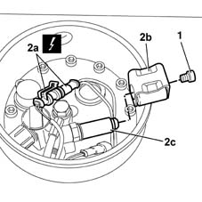

1043B49 coil of lpg fuel system intake solenoid r rwith tank and valve unit cover removed
- Path
- Procedures > 10 ENGINE UNIT > 1043 LGP TANK AND PIPES > 1043B gpl fuel circuit pipes > 1043B49 coil of lpg fuel system intake solenoid r rwith tank and valve unit cover removed
- Kind
- repair procedure (removal / refitting; the operation number is the code)
- Applies to
- engines: 1.6 16v; all production periods; only with equipment: GPOWER
- Interactive page
- https://sloeber94.github.io/elrnDB-fMltpl/en/#/2891509
Applies to: engines: 1.6 16v; all production periods; only with equipment: GPOWER and Euro 3
 Removing
Removing
 Refitting
Refitting1. Undo the bolts securing the coil.
2. Disconnect electrical connections (2a) and remove coil (2b) by withdrawing from pin (2c).

Applies to: engines: 1.6 16v; all production periods; only with equipment: GPOWER and Euro 3
Refitting
RemovingFit the coil to the solenoid piston.
Secure the coil using the bolt.
Connect the intake solenoid coil electrical connection.